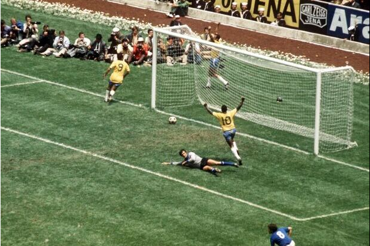

COPA DO MUNDO DE 1970

historia da copa do mundo de 1970
Há sempre a busca pela excelência, e sempre a necessidade de se escolher o melhor. Foi Michael Schumacher o maior piloto de fórmula 1, ou Louis Hamilton? Foi Muhammad Ali o maior pugilista da história, ou Sugar Ray Robinson? Michael Jordan ou Lebron James? Talvez Magic Johnson... Federer ou Nadal? Quem sabe Djokovic... Pelé ou Maradona? Mas aí está Messi... Mas em termos coletivos, no futebol, é difícil achar uma seleção como o Brasil de 1970. E é difícil fazer um texto sobre a Copa do Mundo disputada no México sem que o time de Zagallo seja o centro das atenções... Mas antes de falar do Brasil de Zagallo, Pelé e companhia, precisamos contextualizar um pouco. Afinal, aquela Copa teve outros craques e histórias marcantes. Teve Teófilo Cubillas, talvez o maior jogador peruano de todos os tempos; teve Gerd Müller, o grande atacante alemão; e Gordon Banks, com uma defesa eterna. A Argentina não conseguiu classificação, assim como França, Espanha e Portugal. Já o Marrocos colocava a África em um Mundial pela primeira vez desde a Segunda Guerra Mundial. A Copa de 1970 teve como especificidade ser também a primeira televisionada para o mundo em cores, e foi também o primeiro Mundial com o uso de cartões amarelos e vermelhos.
Primeira fase
A Copa de 1970 foi, como de costume, precedida por disputas sobre sua organização. Esta Copa foi a primeira a ser televisionada em cores.[11] Porém, para que as transmissões se encaixassem melhor nas programações da televisão europeia, algumas partidas começaram ao meio-dia. Esta foi uma decisão impopular entre muitos jogadores e treinadores por causa do intenso calor no México neste período do dia. O formato da competição permaneceu o mesmo da Copa anterior: dezesseis equipes classificadas, divididas em quatro grupos com quatro que se enfrentariam em turno único. Os dois primeiros colocados classificar-se-iam às quartas-de-final. Porém, pela primeira vez nas Copas, o critério de desempate em no caso de igualdade de pontos na fase de grupos era o saldo de gols (e não mais jogos-desempate e goal average) e se dois ou mais times tivessem o mesmo saldo de gols, o desempate se daria por sorteio. Se uma partida das quartas ou das semifinais resultasse num empate após a prorrogação também haveria sorteio para definir a equipe classificada. Pela primeira vez, substituições foram permitidas em Copas do Mundo. Cada time poderia fazer duas alterações durante o jogo. A União Soviética foi o primeiro time a se utilizar do expediente contra o México na partida de abertura. Viktor Serebryanikov foi o primeiro jogador a ser substituído, pois Anatoly Puzach entrou em seu lugar após os 45 minutos iniciais. Esta Copa também foi a primeira a apresentar o uso dos cartões amarelo e vermelho para advertências e expulsões respectivamente (note que as advertências e expulsões já existiam antes de 1970). Cinco cartões amarelos foram mostrados na partida de abertura entre México e URSS, enquanto nenhum cartão vermelho foi mostrado em todo o torneio. A controvérsia cercou a Copa antes mesmo que uma bola fosse chutada. Bobby Moore, capitão da seleção inglesa foi acusado de roubo a uma joalheria, e subsequentemente preso, na Colômbia, onde o time fazia um amistoso pré-Copa. Ele foi solto temporariamente para poder jogar a Copa, e depois as acusações foram discretamente retiradas. O Grupo 2 apresentou exatos seis gols em seis jogos com Itália, atual campeã europeia, e Uruguai, atual campeão sul-americano, prevalecendo sobre Suécia e a surpreendente seleção de Israel após uma série de partidas pouco empolgantes. Desse grupo porém acabaria saindo dois dos quatro semifinalistas. Os primeiros grandes momentos desta memorável Copa do Mundo ocorreram no Grupo 3, no qual o bicampeão Brasil e a defensora do título, Inglaterra se somaram as fortes equipes europeias da Tchecoslováquia e Romênia. Na revanche da final da Copa de 1962, os brasileiros começaram perdendo para os tchecoslovacos, mas conseguiram reagir e acabaram por vencer a partida por 4 gols a 1. Pelé marcou um dos gols, mas o lance dele que ficaria marcado para sempre nesta partida foi a tentativa efetuada do meio de campo que quase bateu o goleiro Ivo Viktor, a bola passou rente a trave. O choque de campeões entre a seleção canarinho e o English Team atendeu às expectativas. O lance mais célebre desta partida foi a forte cabeçada para o chão de Pelé que não atingiu o gol por conta de uma impressionante defesa de Gordon Banks, que conseguiu colocar sua mão por baixo da bola e mandá-la por cima do travessão. No fim, foi um gol de Jairzinho que sacramentou a vitória dos brasileiros pela contagem mínima. Na última rodada, a Romênia impôs dificuldades ao Brasil, mas o time de Zagallo acabou vencendo por 3x2. A Inglaterra também passou à segunda fase, batendo romenos e tchecoslovacos pela contagem mínima. No Grupo 4, o Peru com seu estilo ofensivo conseguiu uma importante vitória contra a Bulgária por 3x2, após estar perdendo de 2x0 no intervalo. Marrocos começou bem sua primeira partida contra a Alemanha Ocidental, saindo na frente. Mas os alemães conseguiram a virada por 2x1. Os alemães também começaram atrás contra os búlgaros, mas um hat-trick de Gerd Muller ajudou na virada, que acabou em 5x2. Muller marcou mais um hat-trick na última rodada com placar de 3x1 dos alemães contra os peruanos. No fim, o Peru acabou avançando junto com a Alemanha Ocidental, pois havia vencido Marrocos por 3x0, com três gols em 11 minutos.
fase 2
Nas quartas-de-final uma transformada Itália bateu o México por 4x1, de virada. Os donos da casa saíram na frente com um gol de José Gonzales, mas Gustavo Pena marcaria um gol contra empatando a partida antes do intervalo. A Itália dominou o segundo tempo. Dois gols de Luigi Riva e um de Gianni Rivera trouxeram o jogo ao seu placar final. Em Guadalajara, o caminho do Peru acabaria com a derrota de 4x2 para o Brasil após uma partida que demonstrou dois times ofensivos. A partida entre Uruguai e União Soviética permaneceu sem gols até cinco minutos antes do fim da prorrogação, quando Victor Espárrago conseguiu arrancar um gol e classificando os sul-americanos. A última quarta-de-final foi uma revanche da final da Copa anterior entre Inglaterra e Alemanha Ocidental, produziu uma das grandes partidas da história da Copa do Mundo. A Inglaterra sofreu um duro golpe antes do jogo, quando Gordon Banks sofreu severas dores de estômago. Seu reserva Peter Bonetti assumiu a posição, e no começo do segundo tempo os ingleses lideravam por 2x0 e o jogo aparentava já estar decidido. Porém, a Alemanha marcou com Franz Beckenbauer no minuto 68. Em pânico, o técnico inglês Alf Ramsey decidiu substituir Bobby Charlton. Sem Charlton, a Inglaterra não conseguia mais se firmar na partida e não conseguia conter os incessantes ataques alemães. A oito minutos do fim, Uwe Seeler cabeceou para marcar o gol de empate. A Alemanha Ocidental agora era a dona do jogo e, na prorrogação, com um erro de Bonetti, Gerd Muller marcou o gol da vitória, impossibilitando a defesa do título por parte dos ingleses. As semifinais apresentaram quatro times que já haviam vencido a Copa no passado: Brasil vs. Uruguai, numa revanche da partida final da Copa de 1950, e Itália vs. Alemanha Ocidental. No jogo entre os sul-americanos, o Brasil conseguiu bater o Uruguai por 3x1 de virada. Esta partida apresentou mais um brilhante lance de Pelé: com a posse de bola dentro da área, ele conseguiu ficar frente a frente com Ladislao Mazurkiewicz e, sem tocar a bola, ela passou à esquerda do goleiro, Pelé correu para o lado direito, pegando a bola com o gol vazio a sua frente. O zagueiro Ancheta não conseguiu tirar a bola, mas Pelé não conseguiu marcar por muito pouco. A semifinal composta pelos europeus é tida por muitos como o melhor jogo da história das Copas do Mundo. A Itália saiu na frente aos 8 minutos com um gol de Roberto Boninsegna após uma bela jogada de "um-dois" com Luigi Riva. A Alemanha Ocidental pressionou em busca do empate pelo resto do jogo, até o final quando Karl-Heinz Schnellinger, que jogava na equipe italiana do AC Milan, marcou o gol de empate nos acréscimos. Na prorrogação, Gerd Muller virou a partida para os alemães no minuto 94. E Tarcisio Burgnich empatou novamente. No minuto 104, Riva marcou o terceiro gol italiano sob a meta de Sepp Maier, mas Muller uma vez mais marcaria, seis minutos depois. A direção de TV ainda estava mostrando a repetição desse gol quando o meio-campista italiano Gianni Rivera, desmarcado perto da marca do pênalti, voleou um belo cruzamento de Boninsegna para o gol da vitória no minuto 111. Franz Beckenbauer jogou parte da partida com uma clavícula quebrada após tentar simular uma falta na prorrogação. Como Helmut Schön, técnico da Alemanha Ocidental, já havia feito as duas substituições permitidas, Beckenbauer ficou com o braço numa tipóia. A partida é tida como o "Jogo do Século", também conhecido como a Partita del Secolo na Itália e Jahrhundertspiel na Alemanha.[4] Um monumento no Estádio Azteca na Cidade do México homenageia o jogo. A Alemanha Ocidental conseguiu o terceiro lugar ao bater o Uruguai por 1x0.
Na final, o Brasil saiu na frente, com Pelé cabeceando um cruzamento de Rivellino no minuto 18. Roberto Boninsegna empatou para os italianos após falha da defesa brasileira. Gérson bateu um forte chute para o segundo gol, e ajudou na marcação do terceiro, com um lançamento de falta para Pelé que cabeceou para Jairzinho. Pelé finalizou sua grande performance saindo da marcação da defesa italiana e assistindo Carlos Alberto Torres no flanco direito para o gol derradeiro. O gol de Carlos Alberto, após uma série de passes da seleção brasileira da esquerda para o centro, é considerado pela BBC o gol mais bonito de todos os tempos. Dos onze jogadores do time brasileiro, dez tocaram na bola antes do gol. A vitória consagrou o Brasil como a primeira equipe a conquistar três títulos na história das Copas. Com sua terceira vitória após 1958 e 1962, o Brasil pôde reter a posse da Taça Jules Rimet permanentemente (ironicamente, ela seria roubada em 1983 enquanto estava em exposição no Rio de Janeiro e nunca foi recuperada). O técnico brasileiro Mário Jorge Lobo Zagallo foi o primeiro futebolista a se tornar campeão mundial como jogador (1958 e 1962) e como técnico, e Pelé encerrou sua carreira nas Copas do Mundo como o primeiro (e até agora único) vencedor por três vezes. Jairzinho marcou pelo menos um gol em cada um dos seis jogos do Brasil (no primeiro jogo, contra a Tchecoslováquia, ele marcou dois), um feito que até agora não foi repetido. Porém, o artilheiro do torneio foi Gerd Müller, da Alemanha Ocidental, com dez gols. Müller conseguiu marcar hat-tricks em dois jogos consecutivos, contra a Bulgária e contra o Peru na fase de grupos.